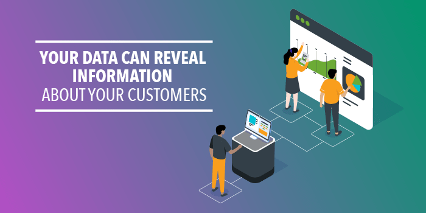
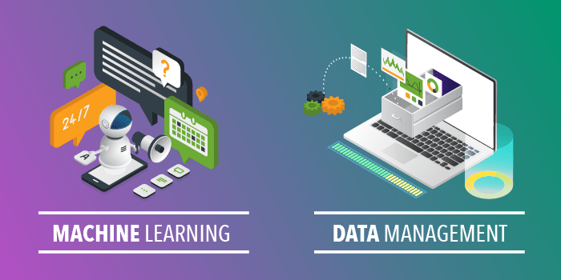

Data can help businesses better understand their customers, improve their advertising campaigns, personalize their content and improve their bottom lines. The advantages of data are many, but you can’t access these benefits without the proper data analytics tools and processes. While raw data has a lot of potential, you need data analytics to unlock the power to grow your business. Here is what we will be going over.
What Is Data Analytics?The term data analytics refers to the process of examining datasets to draw conclusions about the information they contain. Data analytic techniques enable you to take raw data and uncover patterns to extract valuable insights from it. Today, many data analytics techniques use specialized systems and software that integrate machine learning algorithms, automation and other capabilities. Data Scientists and Analysts use data analytics techniques in their research, and businesses also use it to inform their decisions. Data analysis can help companies better understand their customers, evaluate their ad campaigns, personalize content, create content strategies and develop products. Ultimately, businesses can use data analytics to boost business performance and improve their bottom line. For businesses, the data they use may include historical data or new information they collect for a particular initiative. They may also collect it first-hand from their customers and site visitors or purchase it from other organizations. Data a company collects about its own customers is called first-party data, data a company obtains from a known organization that collected it is called second-party data, and aggregated data a company buys from a marketplace is called third-party data. The data a company uses may include information about an audience’s demographics, their interests, behaviors and more.
September 23, 2019 Data can help businesses better understand their customers, improve their advertising campaigns, personalize their content and improve their bottom lines. The advantages of data are many, but you can’t access these benefits without the proper data analytics tools and processes. While raw data has a lot of potential, you need data analytics to unlock the power to grow your business. Here is what we will be going over. What Is Data Analytics? 4 Ways to Use Data Analytics Data Analytics Technology Data Analytics Examples What Is Data Analytics? The term data analytics refers to the process of examining datasets to draw conclusions about the information they contain. Data analytic techniques enable you to take raw data and uncover patterns to extract valuable insights from it. Today, many data analytics techniques use specialized systems and software that integrate machine learning algorithms, automation and other capabilities. Data Scientists and Analysts use data analytics techniques in their research, and businesses also use it to inform their decisions. Data analysis can help companies better understand their customers, evaluate their ad campaigns, personalize content, create content strategies and develop products. Ultimately, businesses can use data analytics to boost business performance and improve their bottom line. For businesses, the data they use may include historical data or new information they collect for a particular initiative. They may also collect it first-hand from their customers and site visitors or purchase it from other organizations. Data a company collects about its own customers is called first-party data, data a company obtains from a known organization that collected it is called second-party data, and aggregated data a company buys from a marketplace is called third-party data. The data a company uses may include information about an audience’s demographics, their interests, behaviors and more. TURN DATA INTO ACTIONABLE INSIGHTS 4 Ways to Use Data Analytics Unlock the Value of Data Data has the potential to provide a lot of value to businesses, but to unlock that value, you need the analytics component. Analysis techniques give businesses access to insights that can help them to improve their performance. It can help you improve your knowledge of your customers, ad campaigns, budget and more. As the importance of data analytics in the business world increases, it becomes more critical that your company understand how to implement it. Some benefits of data analytics include:
Companies can use the insights they gain from data analytics to inform their decisions, leading to better outcomes. Data analytics eliminates much of the guesswork from planning marketing campaigns, choosing what content to create, developing products and more. It gives you a 360-degree view of your customers, which means you understand them more fully, enabling you to better meet their needs. Plus, with modern data analytics technology, you can continuously collect and analyze new data to update your understanding as conditions change.
When you understand your audience better, you can market to them more effectively. Data analytics also gives you useful insights into how your campaigns are performing so that you can fine-tune them for optimal outcomes. Using the Lotame Campaign Analytics tool, you can gain insights into which audience segments are most likely to interact with a campaign and convert. You can use this information to adjust your targeting criteria either manually or through automation, or use it to develop different messaging and creative for different segments. Improving your targeting results in more conversions and less ad waste.
Data analytics provide you with more insights into your customers, allowing you to tailor customer service to their needs, provide more personalization and build stronger relationships with them.
Your data can reveal information about your customers’ communications preferences, their interests, their concerns and more. Having a central location for this data also ensures that your whole customer service team, as well as your sales and marketing teams, are on the same page.
Data analytics can help you streamline your processes, save money and boost your bottom line. When you have an improved understanding of what your audience wants, you waste less time on creating ads and content that don’t match your audience’s interests. This means less money wasted as well as improved results from your campaigns and content strategies. In addition to reducing your costs, analytics can also boost your revenue through increased conversions, ad revenue or subscriptions.
By collecting various kinds of data from numerous sources, you can gain insights into your audiences and campaigns that help you improve your targeting and better predict future customer behavior. One valuable type of data is information about customer behaviors. This refers to data about specific actions that a user takes. They might, for instance, click on an ad, make a purchase, comment on a news article or like a social media post. This and other types of data can reveal information about customer affinities — expressed or suggested interest in activities, products, brands and topics. A customer may express interest in your brand by signing up for your email list. They may also indirectly express interest in a topic by reading about it on your website. They may express interest in a product by clicking on one of your ads for it. Some other potential sources of customer affinity data include survey responses, social media likes and video views. By combining this data with information about your current customers’ demographics, you can gain insights into the customer segments that are most likely to be interested in your brand, content or products. Demographic information includes information about customers’ ages, genders, income, marital status and various other characteristics. For example, you might find, through data analytics, that people between the ages of 18 and 35 are the most likely to purchase your product. You might also find that people who are married make up most of your website’s audience. By targeting multiple characteristics, you can create more specific audiences who are highly likely to convert. You can then use this information to predict the behaviors of various types of users and target your ads and content more effectively.
Data analytics is nothing new. Today, though, the growing volume of data and the advanced analytics technologies available mean you can get much deeper data insights more quickly. The insights that big data and modern technologies make possible are more accurate and more detailed. In addition to using data to inform future decisions, you can also use current data to make immediate decisions.
1.Machine learning: Artificial intelligence (AI) is the field of developing and using computer systems that can simulate human intelligence to complete tasks. Machine learning (ML) is a subset of AI that is significant for data analytics and involves algorithms that can learn on their own. ML enables applications to take in data and analyze it to predict outcomes without someone explicitly programming the system to reach that conclusion. You can train a machine learning algorithm on a small sample of data, and the system will continue to learn as it gathers more data, becoming more accurate as time goes on.
2.Data management: Before you can analyze data, you need to have procedures in place for managing the flow of data in and out of your systems and keeping your data organized. You also need to ensure that your data is high-quality and that you collect it in a central data management platform (DMP) where it’s available for use when needed. Establishing a data management program can help ensure that your organization is on the same page regarding how to organize and handle data.
3.Data mining: The term data mining refers to the process of sorting through large amounts of data to identify patterns and discover relationships between data points. It enables you to sift through large datasets and figure out what’s relevant. You can then use this information to conduct analyses and inform your decisions. Today’s data mining technologies allow you to complete these tasks exceptionally quickly.
4.Predictive analytics: Predictive analytics technology helps you analyze historical data to predict future outcomes and the likelihood of various outcomes occurring. These technologies typically use statistical algorithms and machine learning. More accurate predictions means businesses can make better decisions moving forward and position themselves to succeed. It allows them to anticipate their customers’ needs and concerns, predict future trends and stay ahead of the competition.
Let’s look at a few quick examples of how you might collect data and analyze it to help improve outcomes for your business.
Let’s say you’re a marketer who’s running an online ad campaign to promote a new smartphone. You might start by targeting the ad to people who bought the previous version of the phone in question. As your campaign runs, you use data analytics techniques to sift through the data generated when people clicked on the ad. By examining data about these users’ interests, perhaps you discover many of them are interested in photography. Perhaps this is because your new phone has a better camera than the previous model. Using this information, you could fine-tune your ad to focus on users who bought the previous phone and like photography. You could also find new audiences of people who didn’t buy the older phone but are interested in photography. As another example, let’s say you publish a site that features videos about sports. As people visit your site, you could collect data about which videos different visitors watch as well as how highly they rate the videos, which ones they comment on and more. You could also gather information about the demographics of each user. You can use data analytics tools to determine which audience segments are most likely to watch certain videos. You can then suggest videos to people based on the segments they fit into best. For example, you might find that older men are most likely to be interested in golf, while younger men are most likely to be interested in basketball. For some real-life examples of how Lotame’s data analytics tools have helped business drive improved results, check out our case studies.
\